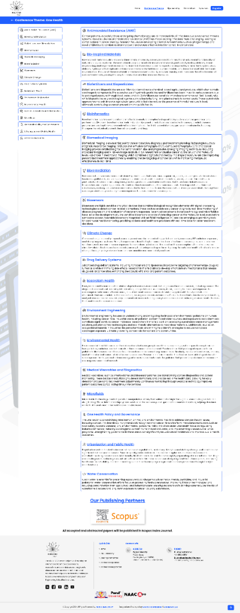
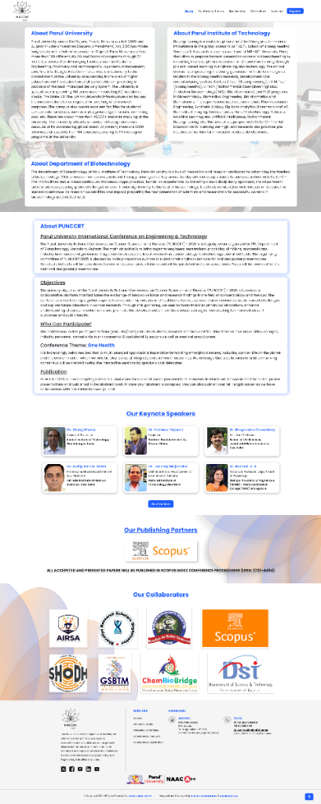

PUNCCRT
PUNCCRT is a corporate website concept design to establish a strong digital presence through clear communication, structured information architecture, and a modern visual identity. The project explores how thoughtful UX and visual storytelling can simplify complex business offerings, strengthen credibility, and help potential clients quickly understand the organization's expertise and value proposition.
The Challenge
Corporate websites often struggle to communicate complex services in a way that is both engaging and easy to understand. Visitors typically make decisions within seconds, making it essential to present information with clarity while reinforcing credibility and professionalism. The challenge was to design an experience that simplifies communication without oversimplifying the business itself.
Key Challenges:
- Business offerings required clearer communication.
- Visitors needed to understand the company's value proposition quickly.
- Service information lacked a logical hierarchy.
- The website needed to reinforce trust and professionalism.
- Navigation had to support both first-time and returning visitors.
Design Strategy
The design strategy focused on presenting business information through a structured and engaging experience that balances visual simplicity with clear communication.
Design Strategy:
- Communicate the company's expertise with clarity.
- Simplify navigation across services and solutions.
- strengthen brand credibility through modern design.
- Improve content discoverability.
- Create a scalable website capable of supporting future business growth.
Research & Content Strategy
To understand how businesses communicate complex offerings online, I reviewed modern corporate websites across technology and professional service industries. The analysis revealed that the most effective websites prioritized clear messaging, structured navigation, and concise storytelling over excessive visual complexity.
Key Insights:
- Visitors scan content before reading it in detail.
- Strong visual hierarchy improves comprehension.
- Clear service descriptions reduce user uncertainty.
- Trust indicators help build credibility early in the experience.
- Consistent navigation improves overall usability.
Ideation & Exploration
The exploration phase focused on organizing content into a logical journey that introduces the company, explains its services, highlights expertise, and encourages users to take action. Different layout structures were explored to balance information density with readability while maintaining a professional visual identity.
Design Considerations:
- Introduce the company's value proposition immediately.
- Organize services into clearly defined sections.
- Maintain a clean visual hierarchy throughout the experience.
- Guide users naturally toward contact and enquiry actions.
- Balance business credibility with modern aesthetics.
Final Design
The final website combines clean visual design with structured content to create a professional and trustworthy digital experience. Information is presented through clearly defined sections that help visitors understand the company's expertise, explore its services and connect with confidence.
Design Highlights:
- Modern corporate interface.
- Structured content hierarchy.
- Service-focused navigation.
- Professional visual language.
- Consistent design system.
- Responsive user experience.



Project Impact
The redesigned experience demonstrates how effective communication and thoughtful information architecture can strengthen a company's digital presence while making its services easier to understand.
Potential Outcomes:
- Improved communication of business offerings.
- Increased visitor confidence and trust.
- Better navigation across services pages.
- Stronger engagement with potential clients.
- Scalable digital foundation for future growth.
Reflections & Learnings
Designing PUNCCRT reinforced the importance of clarity in corporate digital experiences. The project challenged me to simplify complex business information without losing depth or professionalism. It strengthened my understanding of content hierarchy, service communication, and creating websites that balance business objectives with user needs.